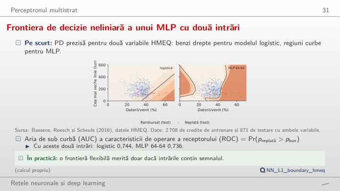
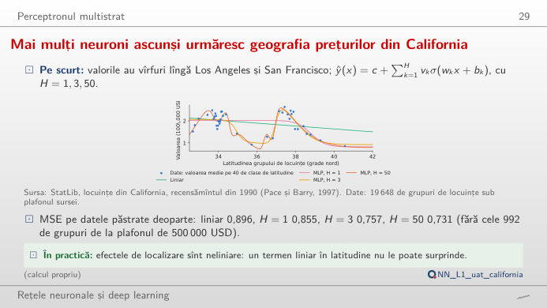
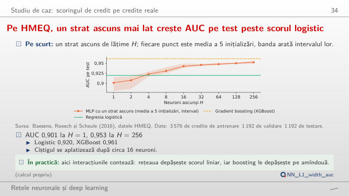
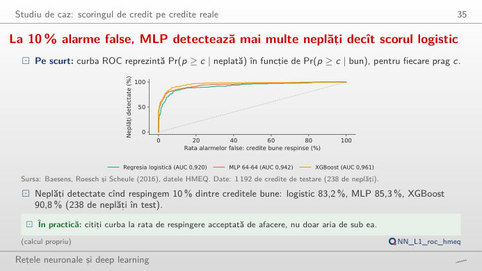
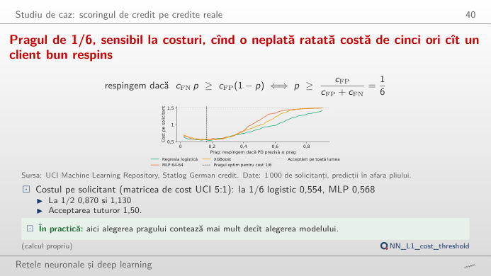

În stînga este slide-ul din curs, în dreapta aceeași figură, recalculată în browser din datele cursului cînd modificați un control. Butonul ▶ modifică parametrul principal pas cu pas. Sub fiecare figură: o sinteză numerică, o întrebare pentru sală și Quantlet-ul cu codul figurii. Nu este nevoie de formule: modificați ponderile, numărul de neuroni ascunși sau pragul și urmăriți ce se schimbă.
De la un neuron la perceptronul multistrat · De la scoruri la decizii de creditare
De la un neuron la perceptronul multistrat
Un MLP curbează frontiera de decizie, dar două intrări aduc puțin semnal în plus

Răspuns
Raportul datorii/venit crește riscul (w₁ > 0), iar un istoric de credit mai vechi îl reduce (w₂ < 0): regresia logistică estimată dă w₁ = 0,62 și w₂ = −0,48 la o abatere standard, cu un AUC pe test de 0,744 pe cele 871 de credite de test care au ambele variabile. Dacă schimbați ambele semne, ordonarea se inversează: AUC scade la 0,256 = 1 − 0,744. Termenul liber mută dreapta fără să o rotească, deci schimbă numărul de credite semnalate, dar nu și AUC. MLP 64-64 antrenat curbează frontiera și obține 0,736 pe aceleași credite: cu două intrări există puțină structură neliniară de găsit.
Mai mulți neuroni ascunși urmăresc geografia prețurilor din California

Răspuns
Un neuron dă o singură treaptă netedă (MSE pe test 0,855, față de 0,896 pentru dreapta de regresie); trei neuroni surprind deja cele două vîrfuri de pe coastă, în jurul orașelor Los Angeles și San Francisco (0,757); cincizeci de neuroni aduc doar puțin în plus (0,731) pe cele 4.912 grupuri de locuințe de test. Panoul din dreapta arată contribuția fiecărui neuron: curba estimată este suma lor plus o constantă. Este teorema de aproximare universală la lucru, dar și limita ei: o singură variabilă explică doar o parte din varianță (eroarea pătratică medie, MSE, în pătrate de 100.000 USD).
Pe HMEQ, un strat ascuns mai lat crește AUC pe test peste scorul logistic

Răspuns
Un singur neuron ascuns (AUC 0,901) este o regresie logistică cu o comprimare în plus și este mai slab decît modelul logistic (0,920); între 4 și 8 neuroni, MLP îl depășește (0,923, 0,931), iar cîștigul se aplatizează peste 32 de neuroni (de la 0,946 la 0,953 pentru 256). Gradient boosting (XGBoost, 0,961) rămîne înainte pe acest set tabular mic, cu mult mai puține alegeri de reglaj. Sinteza dă numărul de parametri: 7.681 pentru H = 256, față de 29 pentru regresia logistică.
De la scoruri la decizii de creditare
La 10 % alarme false, MLP detectează mai multe neplăți decît scorul logistic

Răspuns
La 0,5, MLP semnalează 220 din cele 1.192 de credite de test și detectează 76,5% din cele 238 de neplăți, cu 4,0% dintre creditele bune semnalate din greșeală; la 0,2 semnalează 290 de credite, detectează 84,9% din neplăți și semnalează 9,2% dintre creditele bune. Pragul mută punctul de-a lungul curbei ROC; curba însăși și AUC nu se schimbă. Care punct este cel mai bun depinde de costul fiecărei erori, subiectul blocului următor.
Pragul de 1/6, sensibil la costuri, cînd o neplată ratată costă de cinci ori cît un client bun respins

Răspuns
Nu. Cu costurile 5 și 1, pragul care minimizează costul așteptat este 1/(1 + 5) = 1/6 ≈ 0,17 (regula de decizie Bayes). La 0,5, costul pe solicitant este 0,87 pentru regresia logistică, 1,13 pentru MLP și 0,98 pentru XGBoost, mai mare decît dacă am respinge pe toată lumea (0,70); la 1/6 scade la 0,55, 0,57 și 0,59. Modificați costul: pragul optim urmează 1/(1 + c), iar la c = 1 revine la 0,5. Diferențele dintre cele trei modele sînt mult mai mici decît costul unui prag ales prost.
Date: creditele ipotecare HMEQ (Baesens, Roesch și Scheule, 2016; 5.960 de credite), UCI Statlog German credit (1.000 de solicitanți), locuințele din California (StatLib, recensămîntul din 1990). Împărțirile, modelele și semințele (20261108 + s) sînt cele din curs (analysis_L1.py): HMEQ împărțit stratificat 60/20/20; pentru German credit, scoruri în afara pliului dintr-o validare încrucișată cu 5 pliuri; MLP = perceptron multistrat, XGBoost = gradient boosting, AUC = aria de sub curba ROC (receiver operating characteristic).